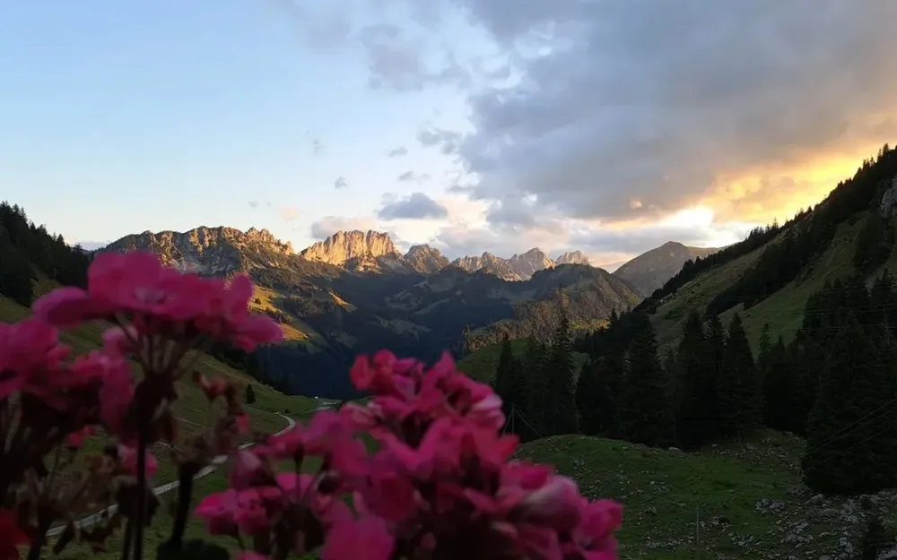

Photo · @ritzliDINNER WITH A VIEW
A mountain restaurant on the way back from Gastlosen, with a direct line of sight on the ridge at blue hour.
Great way to end a long hiking day. Eat well, let the light go, and watch the Gastlosen turn pink behind the plate. It sits right on the descent, so no detour needed.
Stick around after sunset. Blue hour here is often better than the sunset itself. The sky goes deep indigo and the restaurant warm lamps add a second glow in the foreground.